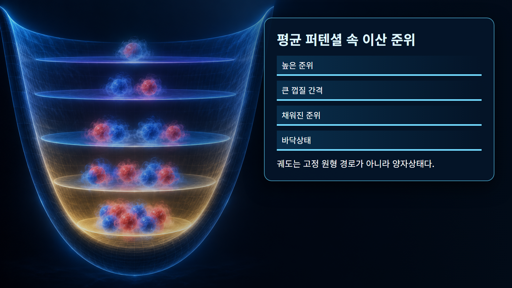
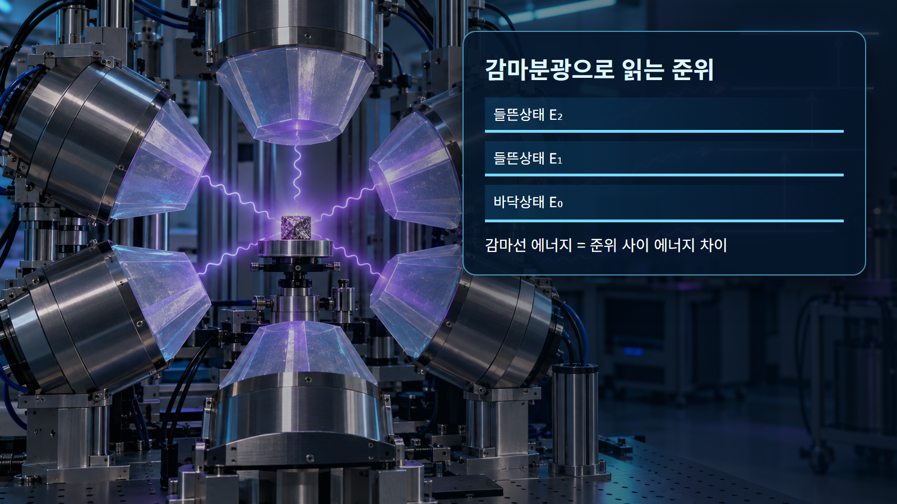

핵물리 기초 · 015
껍질모형
핵자가 양자화된 에너지 준위와 궤도를 차례로 채운다는 원자핵 모형
껍질모형은 양성자와 중성자가 평균 핵퍼텐셜 안의 불연속 에너지 준위를 채운다고 본다. 전자가 원자 껍질을 채우는 모습과 비슷하지만 핵자는 강한 상호작용을 하며 양성자와 중성자 준위 계열을 따로 채운다. 파울리 배타원리에 따라 같은 양자상태에는 제한된 핵자만 들어간다.
개념 정의
껍질모형은 양성자와 중성자가 평균 핵퍼텐셜 안의 불연속 에너지 준위를 채운다고 본다. 전자가 원자 껍질을 채우는 모습과 비슷하지만 핵자는 강한 상호작용을 하며 양성자와 중성자 준위 계열을 따로 채운다. 파울리 배타원리에 따라 같은 양자상태에는 제한된 핵자만 들어간다.
이 개념은 하나의 그림이나 비유만으로 고정되지 않는다. 양성자수와 중성자수, 에너지 준위, 계의 경계를 함께 정하고 어떤 관측량을 설명하려는지 먼저 구분해야 한다. 같은 핵에서도 바닥상태와 들뜬상태의 구조가 다를 수 있다.
작동 원리
준위는 주양자수·궤도각운동량·전체각운동량으로 구분되며 스핀-궤도 결합이 순서와 간격을 크게 바꾼다. 낮은 에너지부터 채워 닫힌 껍질이 되면 다음 핵자를 넣는 데 큰 에너지 간격이 필요하다. 바깥의 홀핵자가 핵의 스핀·자기모멘트와 저에너지 거동을 좌우한다.
원리식은 물리적 방향과 크기척도를 제공하지만 실제 핵종의 수치는 질량·준위·반응 자료로 확인한다. 보존법칙을 먼저 적용하고, 모형이 생략한 잔류상호작용과 집단효과가 필요한 정밀도인지 판단한다.

단계별 계산과 상황 예시
예시 1｜준위 하나가 2j+1개 상태를 담는다고 하자. j=3/2이면 2(3/2)+1=4개 핵자가 들어갈 수 있다. 같은 종류의 핵자 4개가 반대 방향으로 짝을 이루어 모두 채우면 그 준위의 순각운동량 기여는 대체로 상쇄된다.
예시 2｜산소-16은 양성자 8개와 중성자 8개로 두 종류 모두 닫힌 껍질에 해당한다. 산소-17은 중성자 하나가 다음 껍질에 들어가므로 저에너지 스핀 특성이 그 홀중성자의 궤도에 강하게 좌우된다. 총 핵자수만으로는 이 차이를 설명할 수 없다.
| 구분 | 대표 조건 | 해석 |
|---|---|---|
| 준위 용량 | 2j+1 | 허용 자기양자상태 수 |
| 닫힌 껍질 | 큰 다음 준위 간격 | 추가 안정성 |
| 홀핵자 | 미상쇄 각운동량 | 스핀·자기모멘트 지배 |

원자력공학의 실제 적용
핵스핀·패리티·자기모멘트와 들뜬 준위 배열을 예측하고 감마전이 선택규칙을 해석하는 데 사용한다. 반응 후 생성핵의 가능한 상태, 붕괴 경로와 분광 피크를 배정할 때 껍질구조가 중요한 근거가 된다.
예비평가에서는 대표값으로 경향을 확인하고 상세평가에서는 핵종·에너지·온도에 맞는 평가자료를 사용한다. 결과에는 입력값, 단위, 자료 버전, 중간 계산과 적용범위를 함께 기록한다. 계산과 측정이 다르면 입력자료, 계의 경계, 누락된 상태나 반응경로 순으로 추적한다.
오해와 적용 한계
전자가 행성처럼 핵 주위를 도는 그림을 핵자에 그대로 적용하면 안 된다. 궤도는 고정 궤적이 아니라 확률상태다. 단순한 독립입자 모형은 핵자 사이 잔류상호작용과 집단운동을 생략하므로 복잡한 핵에서는 큰 모형공간과 유효상호작용이 필요하다.
이미지는 핵자와 힘을 눈에 보이게 확대한 개념 표현이며 실제 크기·거리·시간 비율이 아니다. 비유가 양자상태를 고전 궤적으로 바꾸지 않도록 주의하고, 정량 결론은 핵종별 실험자료와 불확실성을 포함해 판단한다.
핵심 정리
껍질모형은 핵의 집단적 경향과 개별 양자상태를 구분해 읽는 출발점이다. 정의와 작동 원리를 확인한 뒤 두 예시처럼 입력·단위·계산·해석을 나누면 공식이 설명하는 범위가 선명해진다. 실제 적용에서는 서로 다른 모형의 강점과 한계를 비교하고 검증된 핵자료로 수치를 보완한다.
검토자는 값이 그럴듯한지만 보지 않고 보존법칙, 차원, 극한조건을 독립적으로 검사한다. 자료가 없는 영역의 보간과 외삽을 구분하며, 불확실성이 설계판단에 미치는 민감도를 함께 제시해야 한다. 서로 다른 모형이 같은 관측량을 설명할 때에는 계산값뿐 아니라 가정, 필요한 입력자료와 적용 가능한 핵종 범위를 같은 표에서 비교한다.